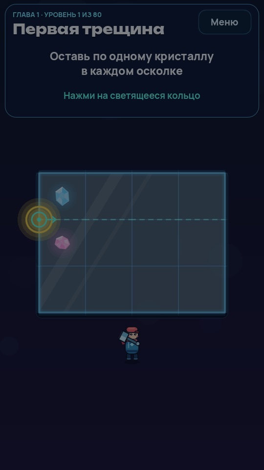
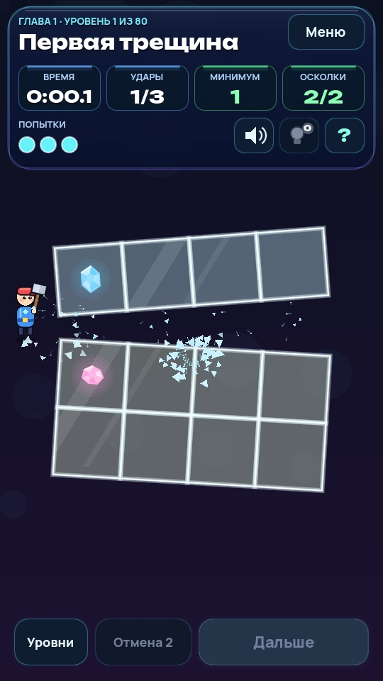
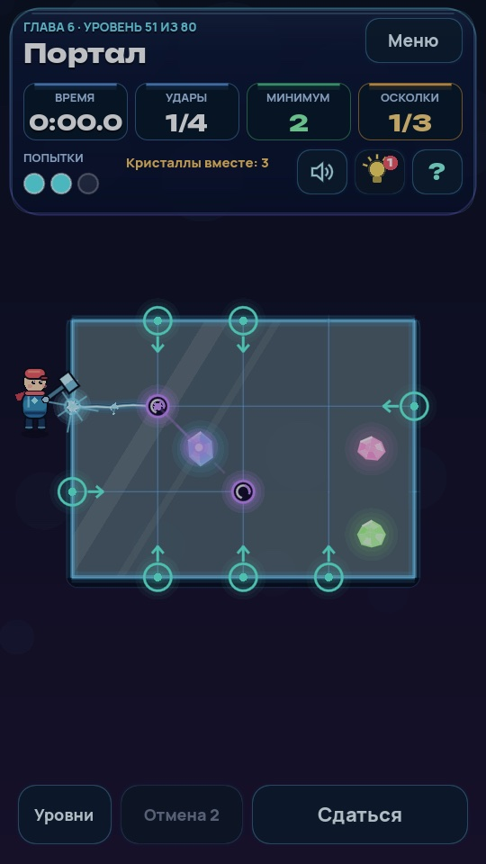

Puzzle game for iPhone
Shiverglass
One crystal per shard.
Pick where to strike, follow the cracks, and split the glass until every shard holds a single crystal.
How it plays
How it plays
80 puzzles across eight chapters.


Pick a strike point
Look for a line that can split the crystals apart.


Split the glass
Follow the crack and aim for one crystal in every shard.


Send a crack through a portal
Later chapters introduce portals and other ways to change a crack’s path.